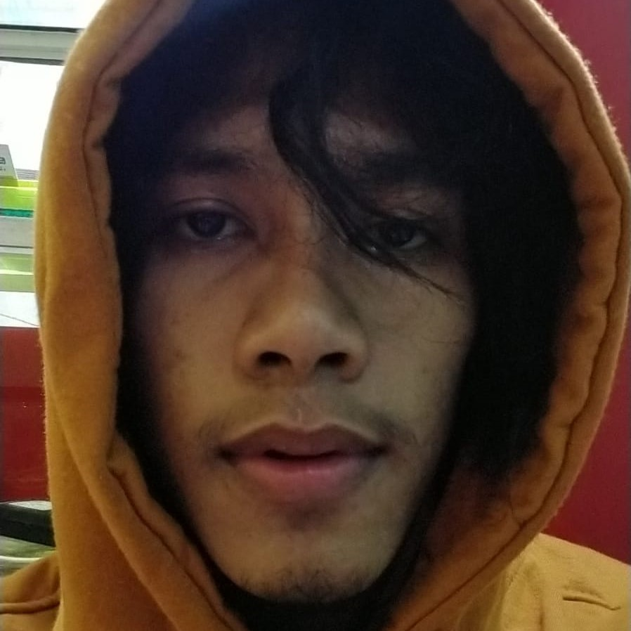
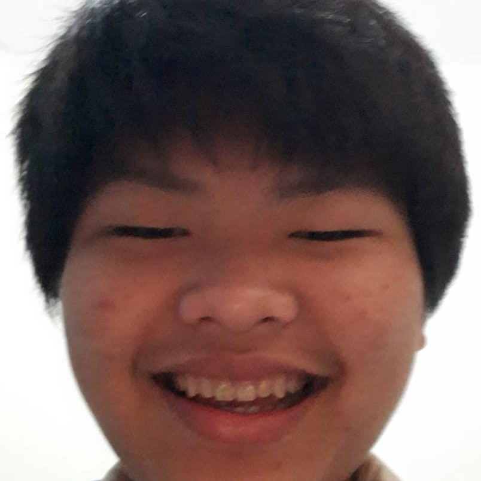
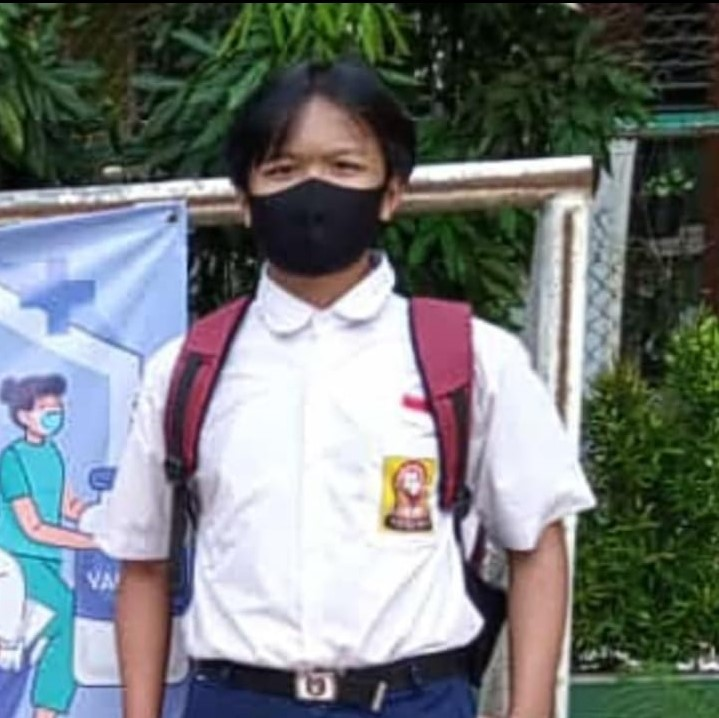
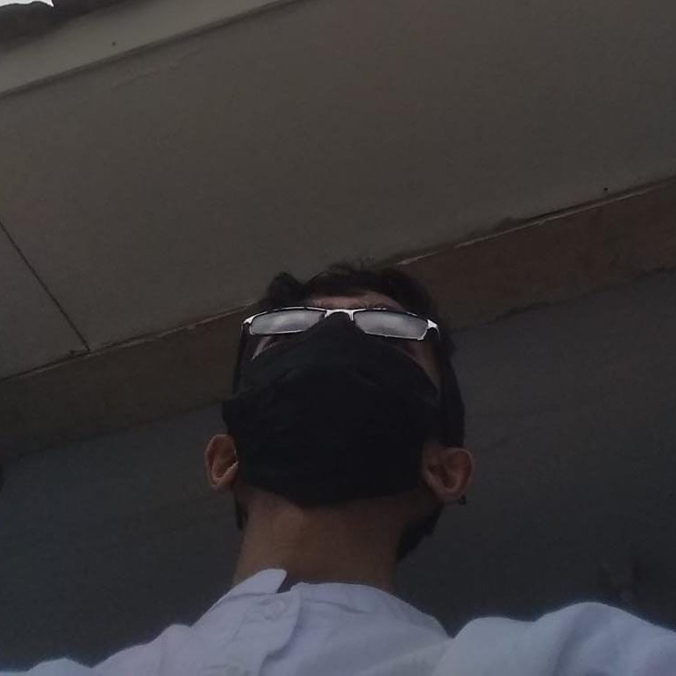
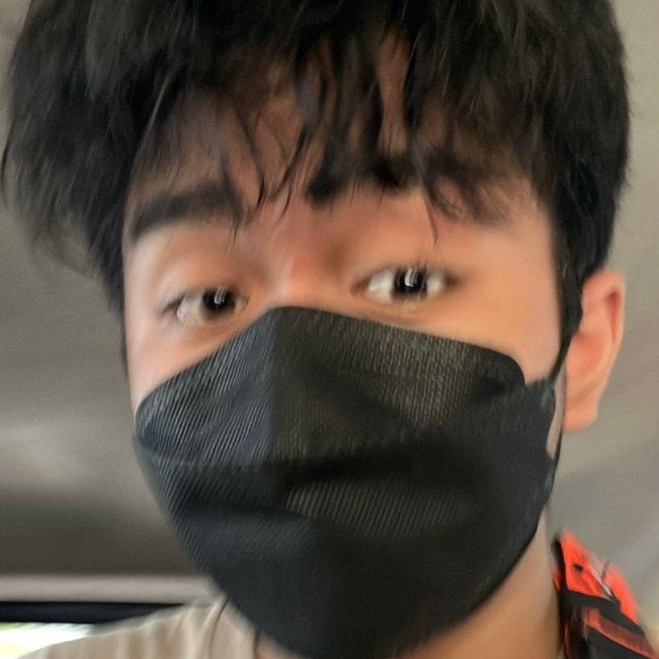
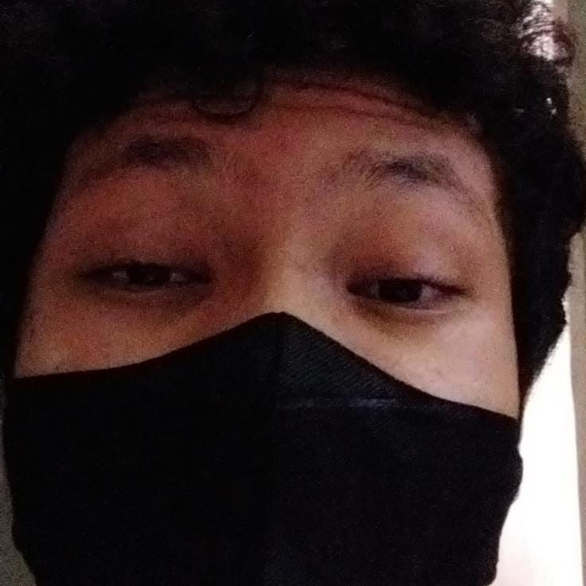

BELAJAR MENJADI ANJIME
Keep living keep breathing
Welcome to the gang. Ingfokan permabaran santuy alek legends banh!
THE LOWEST CLASTER
Wibu Original
Wibu original adalah sebutan untuk seseorang yang tergila-gila pada anime. Mereka bisa disebut juga seseorang yang sangat terbosesi pada budaya Jepang. Wibu original sendiri merupakan kelas paling bawah atau kelas paling biasa diantara kelas yang lainnya. Biasanya mereka menonton dan memndownload anjime yang gratisan, dan membeli figure yang biasa saja. Umumnya mereka tidak begitu suka mengsatir, karena bagi mereka hidup sangat amat mendokse.
Potret contoh orang-orangnya:
Raihan
Elnino
Ojiie
Adit
Zidan
Radit
THE MID CLASTER
Wibu Soft
Mereka juga termasuk pencinta anime dan tidak beda jauh dengan wibu original dijelaskan sebelumnya, namun mereka ini masuk ke kategori wibu baik hati dan santun. Biasanya mereka sering menyebar kebaikan sembari mereka menjadi wibu. Terkadang di antara mereka terdapat juga wibu sad (merupakan bagian wibu soft juga), karena mereka suka menghibur orang lain sampai lupa kalau dirinya sendiri sedang sedih,terluka, adapula yang rajin beribadah sampe jadi radikal, adapula yang suka ngegame dan ngebucin.
Potret contoh orang-orangnya:
Dhimas
Bry
Kaisar
Ayden
Yuni
Farhan
THE HIGHEST CLASTER
Wibu Elit
Wibu elite biasanya wibu yang menguasai segala hal tentang jepang termasuk bahasa secara fasih, budaya dll. mereka lebih fokus ke apa yang ia lakukan akan bermanfaat bagi orang. Apabila menonton anjime di situs atau tempat resmi, dan mereka selalu memilih grafik atau resolusi lebih bagus minimal 1080p . Umumnya mereka sudah menamatkan banyak anjime dan mereka mempunyai ilmu satir yang bagus. Mereka biasanya suka mengoleksi figur mahal dan mempunyai waifu/husbando yang kece.
Potret contoh orang-orangnya:

Ananta
Ruby
Andreas
Nugraha
Abigail
Faiz
 Ojiie
Ojiie